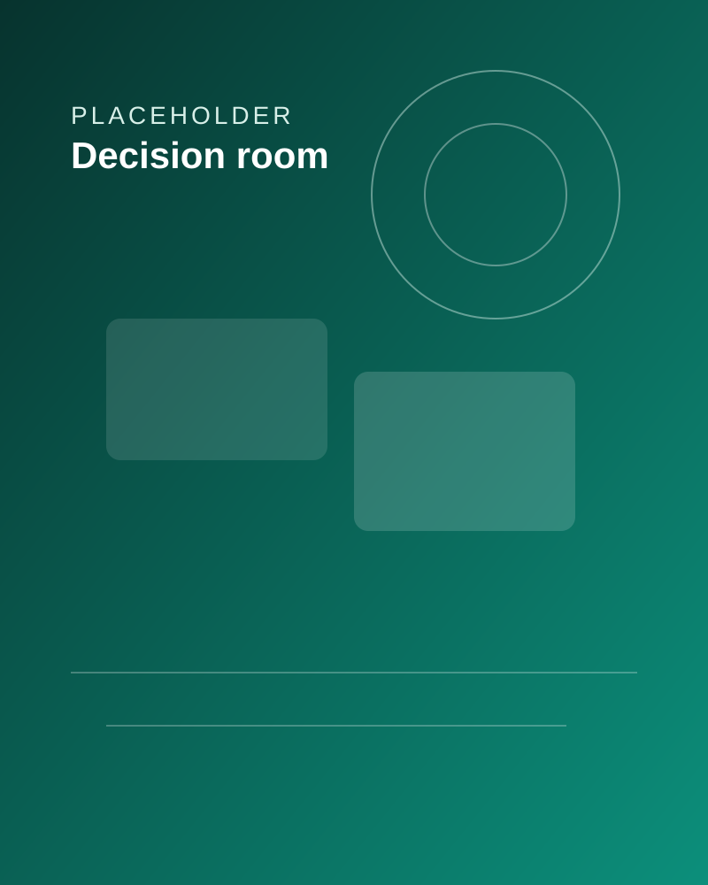
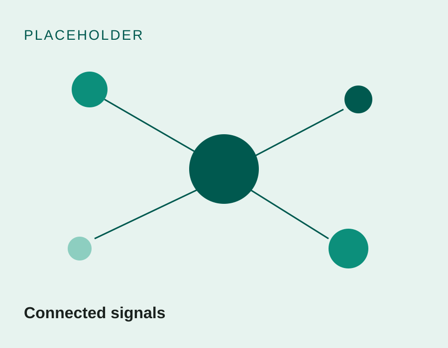
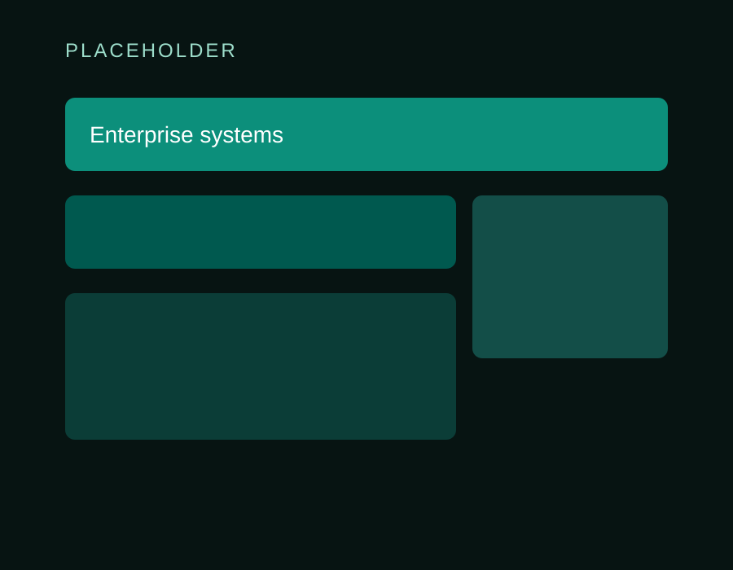
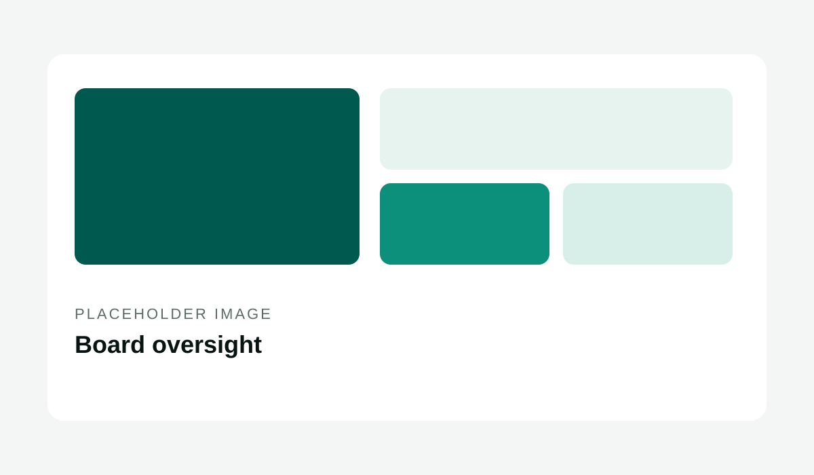
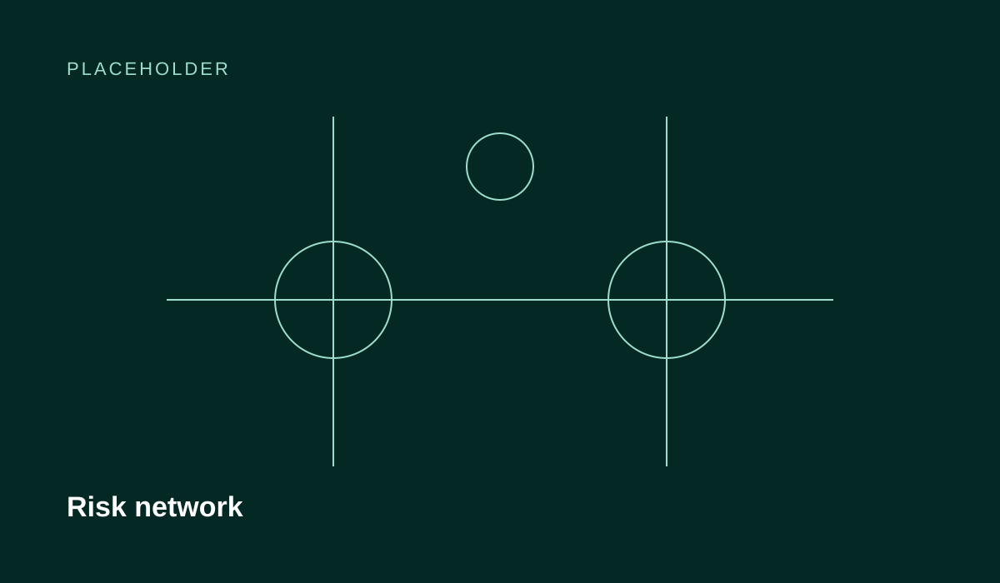
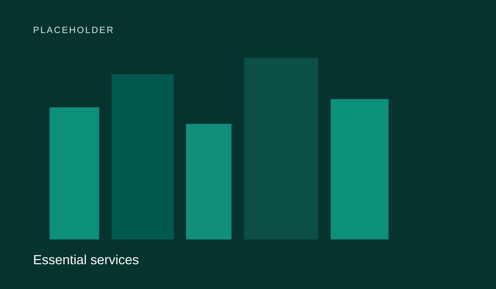

01
Data
Signals from systems, threats, markets, operations and third parties. Most stall at volume without context.
Decision intelligence for AI, cybersecurity and risk
Aryx Intelligence brings AI, cybersecurity, risk, climate and enterprise technology together, so leaders decide with clarity rather than assumptions.
Complexity, made decisive.

Artificial intelligence Cybersecurity Risk Climate Enterprise technologyPositioning

Aryx Intelligence is a decision-intelligence company headquartered in Doha, Qatar. We help boards, executives and public-sector leaders turn fragmented data, technology and risk information into intelligence they can act on and defend.
Organizations collect more signals than ever: threat alerts, system telemetry, market data, regulatory change, third-party exposures. Each is managed by a different function, in a different language. Aryx connects them. We interpret what they mean for your organization, frame the decisions they demand, and help put those decisions into action through the right technology, governance and controls.
01
Signals from systems, threats, markets, operations and third parties. Most stall at volume without context.
02
Signals connected, verified and prioritized. Most stall when this stays siloed by function.
03
What the intelligence means for this organization, now. Technical language alone has no business meaning.
04
A clear choice with known trade-offs and owners. Escalation without options is where many stop.
05
Execution through people, process and technology, so plans reach operations.
06
The capacity to absorb shocks and adapt, measured continuously rather than once a year.
Core capabilities
Aryx is the layer that makes these disciplines inform one another and inform leadership. Not an IT services firm, not an AI agency, and not a cybersecurity consultancy standing alone.
Enterprise AI strategy, decision intelligence, AI agents and AI governance, designed around measurable business outcomes.
enterprise AI strategy and governanceSecurity strategy, architecture, threat intelligence and resilience, managed as a business-risk discipline.
cybersecurity as a business-risk disciplineA connected view of technology, cyber, operational, third-party and strategic risk, built for executive decisions.
connected risk and decision intelligenceClimate risk, GHG accounting, financed emissions (PCAF) and ESG data, built to the standard of financial decisions and assurance.
climate risk and emissions intelligenceArchitecture, cloud, data and operating models that make the enterprise faster and more resilient.
technology strategy and modernizationOur intelligence-driven approach
01 — Frame
Define the decision, the stakes and who owns it.
02 — Connect
Bring together the data, systems and risk signals that bear on it.
03 — Interpret
Turn signals into business meaning: exposure, opportunity, trade-off.
04 — Decide
Give leadership clear options with consequences and confidence levels.
05 — Act
Implement through technology, process and governance.
06 — Sustain
Monitor, learn and adapt as conditions change.
Why Aryx
Where Aryx sits is the layer between the disciplines. Every future product or platform fits the same promise: it turns complexity into decisions.
We work across AI, cyber, risk, climate and technology, because the most consequential risks sit between them.
Every engagement starts with the decision leadership needs to make, then works back to the data.
Controls, accountability and assurance are designed in from the start, not retrofitted.
Grounded in GCC regulatory and business realities, aligned to international frameworks such as ISO/IEC 27001, ISO/IEC 42001 and the NIST frameworks.
Our advice is shaped by your outcome, not by a product we need to sell. Confirm vendor-neutrality policy and any technology partnerships
Industries served
Banking & Financial Services · Government & Public Sector · Energy · Infrastructure · Real Estate · Healthcare · Manufacturing · Technology · Professional Services.
AI, cyber, operational resilience and third-party risk under demanding supervision.
View sectorDigital services and AI that stay secure, sovereign and explainable.
View sectorIT, operational technology and the energy transition, seen together.
View sectorConnected, long-lived systems and the dependencies that fail together.
View sectorSmart buildings, tenant data, vendors and sustainability expectations.
View sectorSensitive data, always-available systems and governed clinical AI.
View sectorConnected factories and supply chains as a single risk surface.
View sectorProduct security and AI governance designed in as a trust feature.
View sectorClient confidentiality and generative AI, designed to coexist.
View sectorTechnology & innovation

Aryx designs and builds the systems that make that possible: AI models and agents that work within governance boundaries, risk platforms that connect cyber and business data, and architectures that keep sensitive information sovereign and secure.
Name proprietary platforms or products once launched
Trust & credibility
Leadership with years years across enterprise IT, cybersecurity, risk and sustainability technology.
Practitioner credentials including certifications, for example CISM, ISO 27001 Lead Auditor.
Recognition: awards. Client marks are shown only with written permission.
Frameworks we work with:

AI Governance
The questions boards should ask about AI governance, accountability and risk, and what good answers sound like.

Risk Intelligence
Why risk registers miss connected exposures, and how integrated risk management gives leaders a decision-ready view.

Cybersecurity
Why cyber resilience, not only prevention, belongs on the board agenda, and how to measure it in business terms.
Tell us the decision in front of you. We will show you what intelligence would change it.
Questions